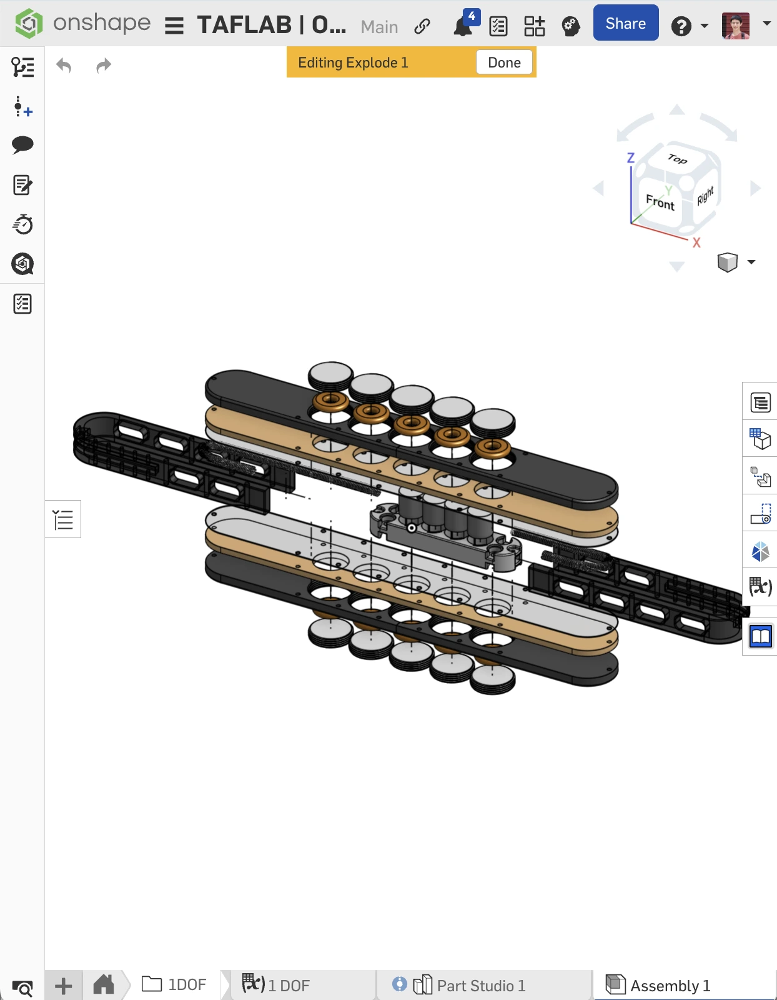
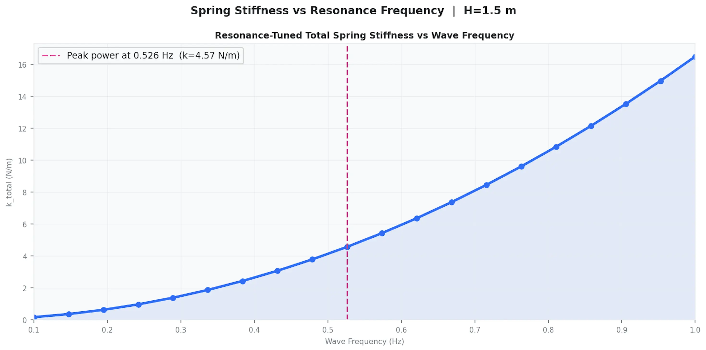
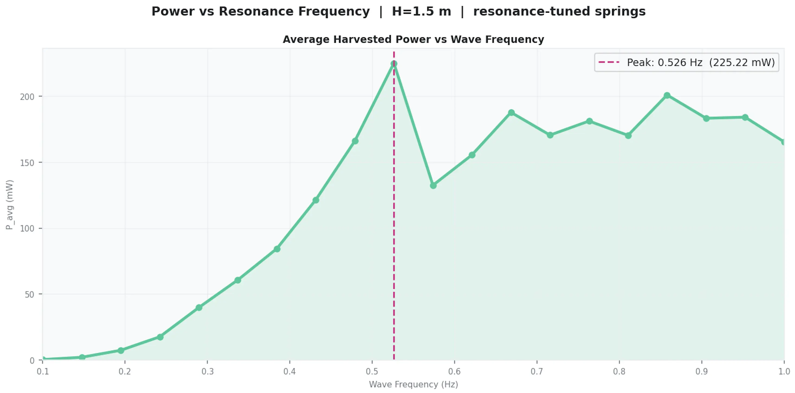
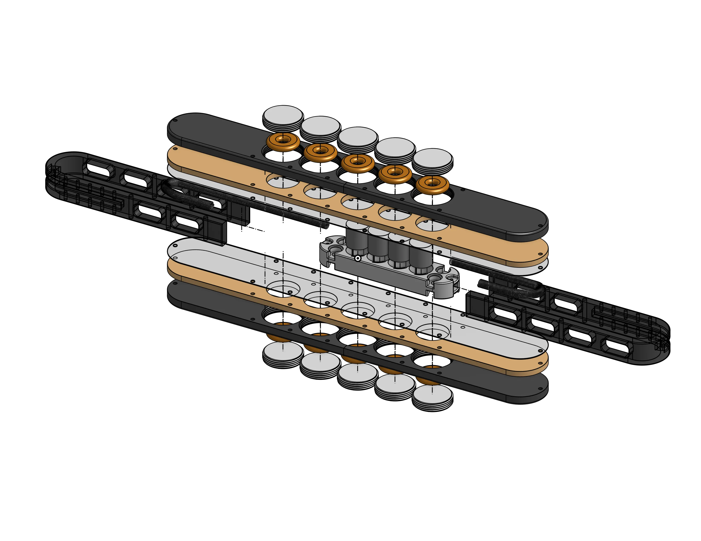
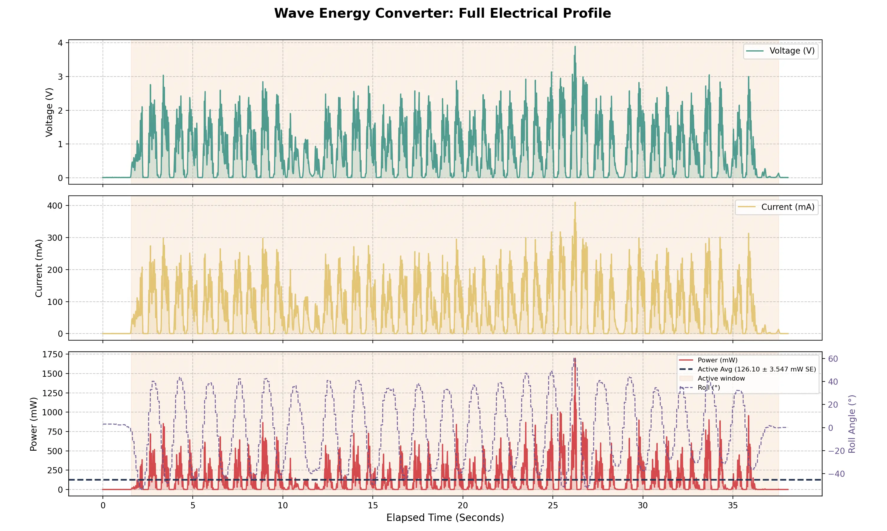
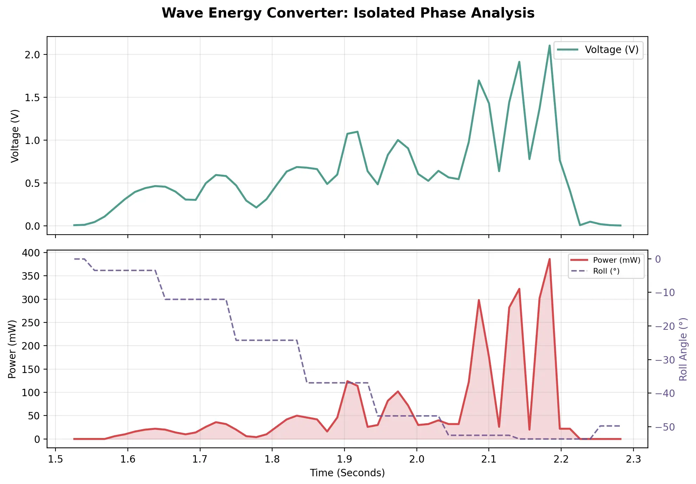
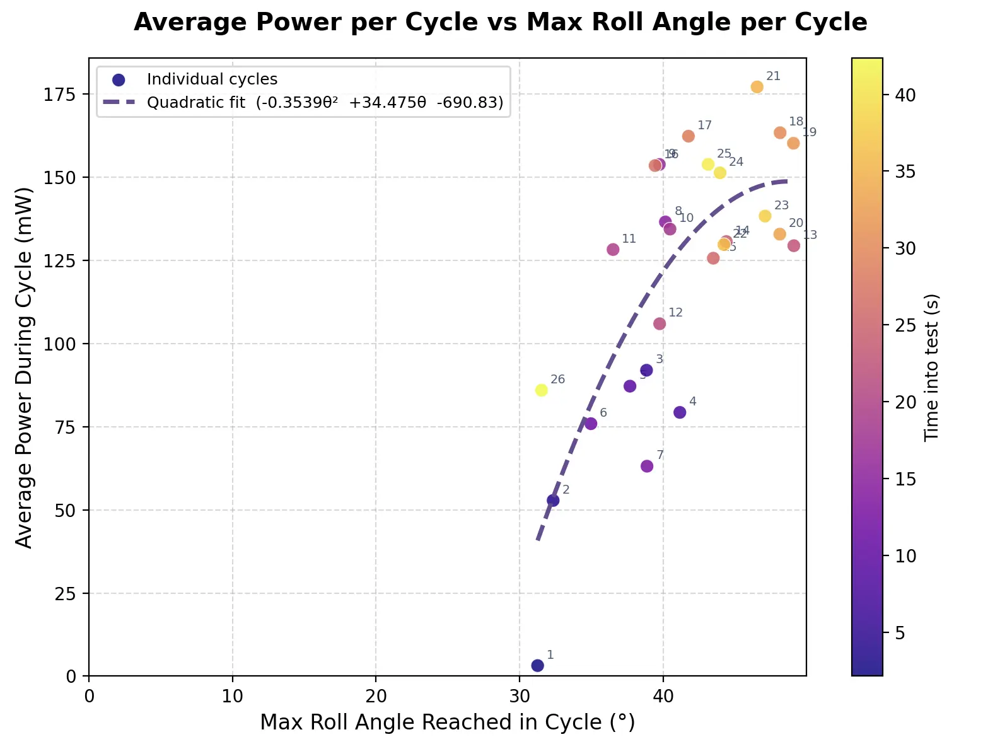

2025 | Theoretical & Applied Fluid Dynamics Lab

A novel "springless" electromagnetic energy harvester designed to extend the mission life of Autonomous Surface Vessels (ASVs). By utilizing a rolling magnetic proof-mass inside a sealed spherical enclosure, this system harvests continuous power from low-frequency ocean swells where solar and wind fail.
ROLE
Lead Research Engineer
Tools
Python
MATLAB
Onshape
ANSYS Maxwell
TEAM
Prof. Reza Alam (Professor)
Arsh K (PHD Advisor)
Leonid M (PHD Advisor)
Matthew L (Undergraduate)
Jovan B (Undergraduate)

Onshape CAD
1. Project Overview
My involvement with the Wave Energy Converter (WEC) project began last summer while working as a technician on the lab's Autonomous Surface Vessels (ASVs). My primary responsibilities centered around waterproofing critical systems, integrating sensors, and performing preventative maintenance to ensure the vessels could survive harsh marine environments. During this time, I experienced firsthand the severe power limitations of ASVs. Relying entirely on intermittent solar and wind power meant that mission durations were often cut short by overcast days or calm nights, highlighting a critical need for a more consistent, weather-independent energy source.
Driven by this challenge, I took ownership of the WEC initiative for the current academic year, elevating it from a PhD student's side project into a primary research endeavor. Stepping into the role of Lead Research Engineer, I now drive the project's technical direction at the level of an M.S. student. I actively manage a team of two undergraduate researchers to design, analytically model, and physically test a fully enclosed, non-resonant electromagnetic harvester capable of capturing ultra-low frequency (0.1–1.0 Hz) wave motion.
2. Proof of Concept & ANSYS Maxwell
To establish the viability of the sliding magnet-over-coil design, we initially fabricated a simplified 1 degree-of-freedom (DOF) proof-of-concept testing rig. This allowed us to benchmark the baseline power generation and validate our fundamental assumptions regarding surface friction, coil spacing, and load resistance. Following the physical prototype, we utilized ANSYS Maxwell to run detailed electromagnetic simulations. By quantifying the magnetic coupling efficiency between neodymium magnets and our custom copper stator, we optimized coil geometry and array configurations, yielding a highly accurate magnetic flux linkage model.


3. Theoretical Background & Analytical Modeling
To accurately predict power output and system behavior, we developed a comprehensive analytical framework using Python. This involved deriving nonlinear equations of motion via Lagrangian mechanics to model the dynamics of the magnet array responding to wave-induced rocking. Concurrently, we applied advanced electromagnetic integration techniques to calculate the flux and voltage over the magnets and coils. This created a system of Ordinary Differential Equations (ODEs) solved computationally for each discrete position, allowing us to accurately tune spring stiffness against specific wave frequencies.
Dynamics Modeling
Electromagnetic Modeling


4. CAD & Fabrication
The mechanical implementation of the 1 DOF slider was meticulously modeled in Onshape. We selected a 1/32” polycarbonate boundary to minimize the air gap to roughly 1mm while ensuring structural integrity without introducing magnetic braking forces (eddy currents). The housing was designed with high modularity in mind, allowing us to rapidly swap out coil arrays, adjust the magnet configurations, and tune the restorative springs to match our target ocean swell frequencies.

5. Testing & Results
Physical testing was conducted by integrating an HMT901 accelerometer to capture precise kinematic data while recording the electrical output across a tailored resistor load. During our trials, we achieved an impressive 162 mW of power at 0.73 Hz. When comparing this physical yield to our Python ODE simulations (which predicted 170 mW at a 4.5 N/m spring stiffness), we observed an exceptionally low 5% error rate, successfully validating both our theoretical model and the efficiency of our prototype.



6. Documentation & Presentations
Below is the comprehensive research poster detailing the wave energy converter's architecture and performance, alongside our iterative presentation slide decks delivered throughout the semester.